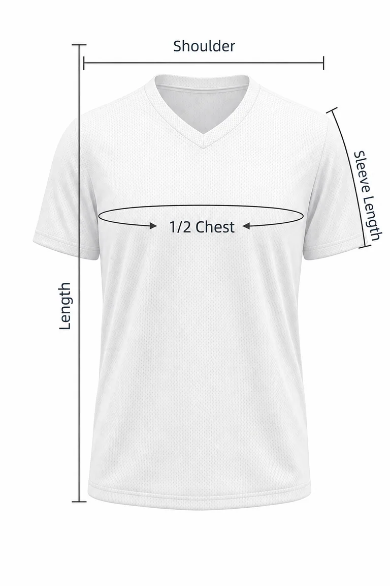

Measurements are in inches.
| Size | 1/2 Chest (in) | Length (in) | Shoulder (in) | Sleeve Length (in) |
|---|---|---|---|---|
| S | 20.9 | 28.5 | 17.3 | 8.3 |
| M | 22.0 | 29.5 | 18.1 | 8.7 |
| L | 23.2 | 30.5 | 19.3 | 9.1 |
| XL | 24.4 | 31.5 | 20.5 | 9.4 |
| XXL | 25.6 | 32.5 | 21.7 | 9.8 |
| 3XL | 26.8 | 33.5 | 22.8 | 10.2 |
| 4XL | 27.9 | 34.4 | 24.0 | 10.6 |
| 5XL | 29.1 | 35.4 | 25.2 | 11.0 |
Measurements are in centimeters (cm).
| Size | 1/2 Chest (cm) | Length (cm) | Shoulder (cm) | Sleeve Length (cm) |
|---|---|---|---|---|
| S | 53 | 72.5 | 44 | 21 |
| M | 56 | 75.0 | 46 | 22 |
| L | 59 | 77.5 | 49 | 23 |
| XL | 62 | 80.0 | 52 | 24 |
| XXL | 65 | 82.5 | 55 | 25 |
| 3XL | 68 | 85.0 | 58 | 26 |
| 4XL | 71 | 87.5 | 61 | 27 |
| 5XL | 74 | 90.0 | 64 | 28 |
Note: Measurements above are garment measurements, not body dimensions.

1/2 Chest – Measure flat across the garment, just below the armholes.
Length – Measure from the highest shoulder point to the bottom hem.
Shoulder – Measure straight across from shoulder seam to shoulder seam.
Sleeve Length – Measure from the shoulder seam to the sleeve hem.